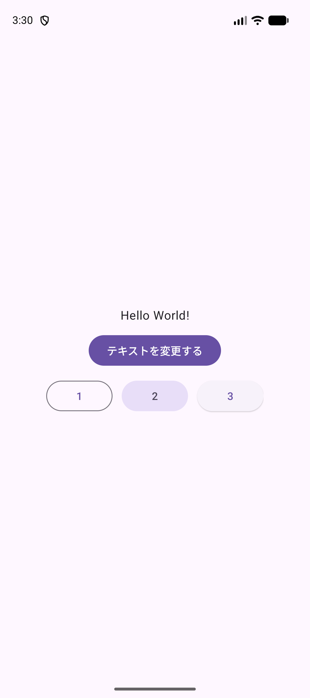

ANDROID PROGRAMMING 1 / 共通資料・授業サポート
提出課題と
APKの作り方
この授業の提出課題の説明です。自分で作ったアプリを3つ選び、アレンジを加えて、APKというファイルにして提出します。
1. 提出課題
提出するもの
APKファイルを3つ。提出先は Google Classroom です。
| すること | 内容 |
|---|---|
| 選ぶ | この授業で自分が作ったプロジェクトから、好きなものを3つ選びます。 |
| アレンジする | 選んだ3つのそれぞれに、自分なりの変更を加えます。文字の色を変えるだけでも構いません。 |
| APKにする | 3つのそれぞれから、APK（エーピーケー）を作ります。アプリを1つのファイルにまとめたものです。 |
| 提出する | 3つのAPKを、Google Classroomに提出します。 |
進め方
番号は、下の見出しの番号と同じです。3〜6は、アプリ1つごとに行います。3つ選ぶので、同じ手順を3回くり返します。7の提出は、APKが3つそろってから1回で行います。
完成プロジェクト（見本）をそのまま出しても、提出にはなりません
教科書からダウンロードできる完成プロジェクトは、先生が作った見本です。提出するのは、自分で作ったプロジェクトにアレンジを加えたものです。
締め切りは、先生の案内に従ってください。
2. アプリを3つ選ぶ
Finderで 書類 → Android1 を開きます。A01HelloAndroid や A02CalcGame のように、授業で自分が作ったプロジェクトのフォルダが並んでいます。この中から3つ選びます。
どの単元のものでも選べます。気に入っているもの、もっと変えてみたいものを選んでください。
samples フォルダの中のものは、選べません
書類 → Android1 → samples の中にあるのは、先生が作った完成プロジェクト（見本）です。選ぶのは、Android1 のすぐ下にある、自分で作ったプロジェクトです。
最後まで作れていない単元も、教科書を見ながら完成させれば選べます。3つそろわないときは、先生に相談してください。
3. アレンジの前に、コピーを取っておく
アレンジを始めると、どこを変えたか分からなくなったり、アプリが動かなくなったりすることがあります。そうなっても元に戻せるように、先にプロジェクトをまるごとコピーしておきます。ここでは A02CalcGame を例にします。
- Finderで 書類 → Android1 を開きます。
- アレンジするプロジェクトのフォルダ（
A02CalcGame）を右クリックします。 - 出てきたメニューから 複製 を選びます。
成功の目印
同じ場所に A02CalcGameのコピー というフォルダができている。
コピーのほうは、開かずにそのまま置いておきます。アレンジするのは、元の名前のほう（A02CalcGame）です。
元に戻したいとき
アレンジの途中で動かなくなり、直せなくなったら、コピーからやり直せます。
- Android Studioで、そのプロジェクトのウィンドウを閉じます。
- Finderで 書類 → Android1 を開きます。
- 動かなくなったほうのフォルダを1回クリックして選び、Enter を押します。名前を変えられるようになるので、
A02CalcGame_oldに変えます。 - 同じように、
A02CalcGameのコピーの名前をA02CalcGameに変えます。 - Android Studioの Open から
A02CalcGameを開き直します。 - もう一度アレンジを始める前に、上の「複製」の手順で、コピーを取り直します。
動かなくなったほうは、消さずに名前を変えるだけにしておくと、あとで見比べられます。
4. アレンジする
どこを、どれだけ変えるかは自由です。「何か所以上」という決まりはありません。文字の色を1か所変えるだけでも、アレンジです。もっとやってみたい人は、好きなだけ変えてください。
変えられるものの例
| 変えるもの | 変える場所 | 書き方の例 |
|---|---|---|
| 文字の色 | activity_main.xml の、文字を出す部品（TextView など） | android:textColor="#FF0000" |
| 画面の背景の色 | activity_main.xml の、いちばん外側の部品 | android:background="#FFF4D5" |
| ボタンの色 | activity_main.xml の Button | android:backgroundTint="#008000" |
| 表示する文字（文言） | activity_main.xml の android:text や、Javaの setText の " " の中 | android:text="こんにちは！" |
| 画像 | res → drawable の中の画像 | 自分で用意したPNG画像を、同じファイル名のまま入れ替える。名前が同じなら、ほかのコードは変えずに済む |
| 数値 | Javaの中の数字 | 計算ゲームの問題の数など |
これは例です。表にないところを変えても構いません。
ボタンの色は android:background では変わりません
ボタンに android:background を書いても、色は変わらず、角の丸みだけがなくなります。ボタンの色を変えるときは、android:backgroundTint を使います。
例：文字の色を変える
授業では出てこなかった書き方なので、やり方を1つ示します。A01HelloAndroid の Hello World! の文字を、赤にします。
app → res → layout → activity_main.xmlを開きます。- エディタ右上の Code を選び、
Hello World!と書いてあるTextViewを探します。 - いちばん下の行の
/>を消して改行し、android:textColor="#FF0000"の行を足します。/>は、足した行の終わりに付け直します。
android:text="Hello World!" /> android:text="Hello World!"
android:textColor="#FF0000" />/> は「この部品の設定はここまで」という印です。足す行は、かならず /> より前に入れます。
- Run ▶ を押して、エミュレータで確かめます。
{kind=link}

{kind=link}
色は、# のあとに6文字で書きます。
| 色 | 書き方 |
|---|---|
| 赤 | #FF0000 |
| 青 | #0000FF |
| 緑 | #008000 |
| オレンジ | #FF8C00 |
| 白 | #FFFFFF |
| 黒 | #000000 |
色を書くと、その行の左端に、その色の小さな四角が出ます。四角をクリックすると、好きな色を選べます。
変えたら、すぐRunして確かめる
1か所変えたら Run ▶ を押し、エミュレータで見た目と動きを確かめます。まとめて変えてからRunすると、動かなくなったときに、どこが原因か分からなくなります。
成功の目印
アレンジしたところが、エミュレータの画面で確かめられる。アプリが、アレンジの前と同じように最後まで動く。
変えると動かなくなりやすいところ
次の3つは、変えてはいけないわけではありません。ただ、1か所変えると、ほかの場所も合わせて直す必要があり、ビルドが通らなくなったり、アプリが起動しなくなったりすることがあります。
- クラスの名前（
MainActivityなど） - パッケージ名（
jp.ac.jec.a02calcgameのように、jp.ac.jec.で始まる名前） AndroidManifest.xmlの中身
変えてみたいときは、手順3のコピーがあることを確かめてから始めてください。
5. APKを作る
APK（エーピーケー）は、Androidにアプリをインストールするためのファイルです。今回は授業内で動作を確認する debug版 を作ります。
用意するもの
アレンジが終わり、動作確認が済んだ、自分のプロジェクト。
- プロジェクト名が、提出するアプリのものになっているか確認します。
- コードをRunし、アレンジしたところを含めて、アプリが動くことを確かめます。
- View → Tool Windows → Build Variants を開き、appの Active Build Variant が debug になっているか確認します。
APKを生成（せいせい）する
- 上の Build メニューを開きます。
- Generate App Bundles or APKs → Generate APKs を選びます。表示が異なるバージョンでは、Build App Bundle(s) / APK(s) → Build APK(s) という名前の場合があります。
- 処理が終わるまで待ちます。
- 完了通知に locate（場所を開く）があればクリックします。
Runを押す操作とは別です
提出するときは、このメニューからAPKを作ります。項目が見つからない場合は、メニューを開いたまま先生に見せてください。
教員と一緒に：メニューが見つからない場合
プロジェクト直下のTerminalで、次のコマンドでもdebug APKを作れます。実行する場所に gradlew があることを確認します。
./gradlew :app:assembleDebugBUILD SUCCESSFUL を確認します。
6. ファイルを見つけて、名前を変える
APKのファイル名は、どのアプリでも同じです
できあがるファイルは、どのプロジェクトでも app-debug.apk という名前になります。3つとも同じ名前のまま提出すると、どれがどのアプリのものか、Google Classroomの画面で区別がつきません。APKを1つ作るたびに、すぐ名前を変えます。
はじめの1回だけ、提出するファイルを集めるフォルダを作ります。Finderで 書類 → Android1 を開き、上のメニューの ファイル → 新規フォルダ で、提出用 という名前のフォルダを作ります。
次に、作ったAPKを探します。Finderで 書類（Documents） → Android1 → 提出するプロジェクト名 の順に開き、app → build → outputs → apk → debug の順に進みます。
A01HelloAndroid/app/build/outputs/apk/debug/app-debug.apkapp-debug.apkがあることを確認します。- Finderの更新日時を見て、今作ったファイルか確認します。
app-debug.apkを選んで ⌘ C を押し、提出用フォルダを開いて ⌘ V を押します。コピーなので、元の場所のファイルは残ります。- コピーしたファイルの名前を、すぐに 学籍番号_プロジェクト名.apk に変えます。ファイルを1回クリックして選び、Enter を押すと、名前を変えられます。HelloAndroidでは
自分の学籍番号_A01HelloAndroid.apkです。「自分の学籍番号」を実際の番号に置き換え、区切りには半角の_を使います。.apkの部分は残します。
置き換えるかどうか聞かれたら、置き換えずにやめます
名前を変える前に、次のアプリの app-debug.apk を 提出用 フォルダにコピーすると、同じ名前なので、Finderが置き換えてよいか聞いてきます。置き換えると、前のアプリのAPKが消えます。置き換えずにやめて、先に入っているファイルの名前を変えてください。
ここまで（手順3〜6）を、残りのアプリでもくり返します。
成功の目印
3つのアプリが終わると、提出用 フォルダに、名前のちがうAPKが3つ並ぶ。
自分の学籍番号_A02CalcGame.apk
自分の学籍番号_A05BombGame.apk
自分の学籍番号_A09MemoApp.apk7. Google Classroomに提出する
APKが3つそろってから、まとめて提出します。
- Google Classroomでこの授業のクラスを開き、授業 から提出課題を開きます。
- あなたの課題 の 追加または作成 をクリックし、ファイル を選びます。
提出用フォルダの3つのAPKを選び、アップロードします。- 3つのファイル名が並んでいることを確認し、提出 をクリックします。
- 表示が 提出済み に変わったことを確認します。
ボタンの名前は、画面によって少し違うことがあります。見つからないときは、その画面のまま先生に見せてください。
成功の目印
3つのAPKが、それぞれ 学籍番号_プロジェクト名.apk の名前で表示され、提出済み になっている。
提出したあとでアプリを直したときは、動作確認 → APK生成 → 名前を変える、の順でやり直します。Google Classroomで 提出を取り消し をクリックすると、ファイルを入れ替えて、もう一度提出できます。
このHTML教材のチェック欄だけでは、提出は完了しません。
8. うまくいかないとき
| 起きたこと | やってみること |
|---|---|
| 足した行が赤くなる | /> の位置を確認する。足した行が /> より後ろにあると、エラーになる。 |
| ボタンの色が変わらない | android:background ではなく、android:backgroundTint を使う。 |
| アレンジしたらエラーが出て、直せない | その画面のまま先生に見せる。やり直すときは、手順3の「元に戻したいとき」を見る。 |
| Generate APKs が見つからない | 手順5の「メニューが見つからない場合」を、先生と一緒に行う。 |
app-debug.apk がない・更新日時が古い | 別のプロジェクト（samples の中の見本など）を開いたままAPKを作っていないか確認する。提出するプロジェクトを開き直し、手順5からやり直す。 |
| コピーするとき、置き換えるかどうか聞かれた | 置き換えずにやめる。先に入っているファイルの名前を変えてから、もう一度コピーする。 |
| 自分で作ったプロジェクトが3つそろわない | 先生に相談する。 |
表にないことが起きたら、その画面のまま先生に見せてください。